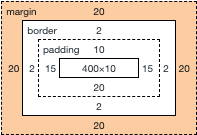
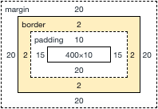

Each element you see on the screen is comprised of 3 stages of positioning which are relative to one another and also their parent tag. To understand how to position anything on the screen we need to understand the difference between these 3 concepts. Working inward starting from the outside we have the margin: The margin is outer shell of the entire element, it has a top, two sides and a bottom. The measurement of each side determines the distance from the parent or sibling of the element you are trying to position. It's important to note that the default measurement of each side will be 0px; so when you first code an element into a page it will sit as close to its parent or sibling as possible. We can set the element we are working withs' distance from other elements on the page through the manipulation of the margin.
 The Border:As the name implies the border is the border around the element. Similarly to the margin it can be given measurements relating to each of the four sides. These could be the width, colour, shape or dropshadow of the border. The border can be distinguished from the margin by the fact it is defined and opaque, whereas the margin is more of a transparent / invisible positioning value.
 The Padding:Now, if you consider the example of an image or some text. Imagine you're formatting your websites layout and you want to move your element. The element has a border. Where does it sit? is it right against the edge of the image / text or it it further away? maybe there is some space between it? That space, is the padding. In form with margins and borders, padding also has 4 sides which have values that can be manipulated to further enrich our elements' positioning. But to conceptualise the padding, do we need a rendered border? No, because even if no border has been defined it still exists at the default 0px x 0px values. That goes both ways too, if you had a big border that butted right up against your image or text with no negative space at all, the padding still exists, its value is just set at 0px. This same rule can be applied to each of the 3 commands for positioning elements, they all still exist at their default value even if they are not in play.